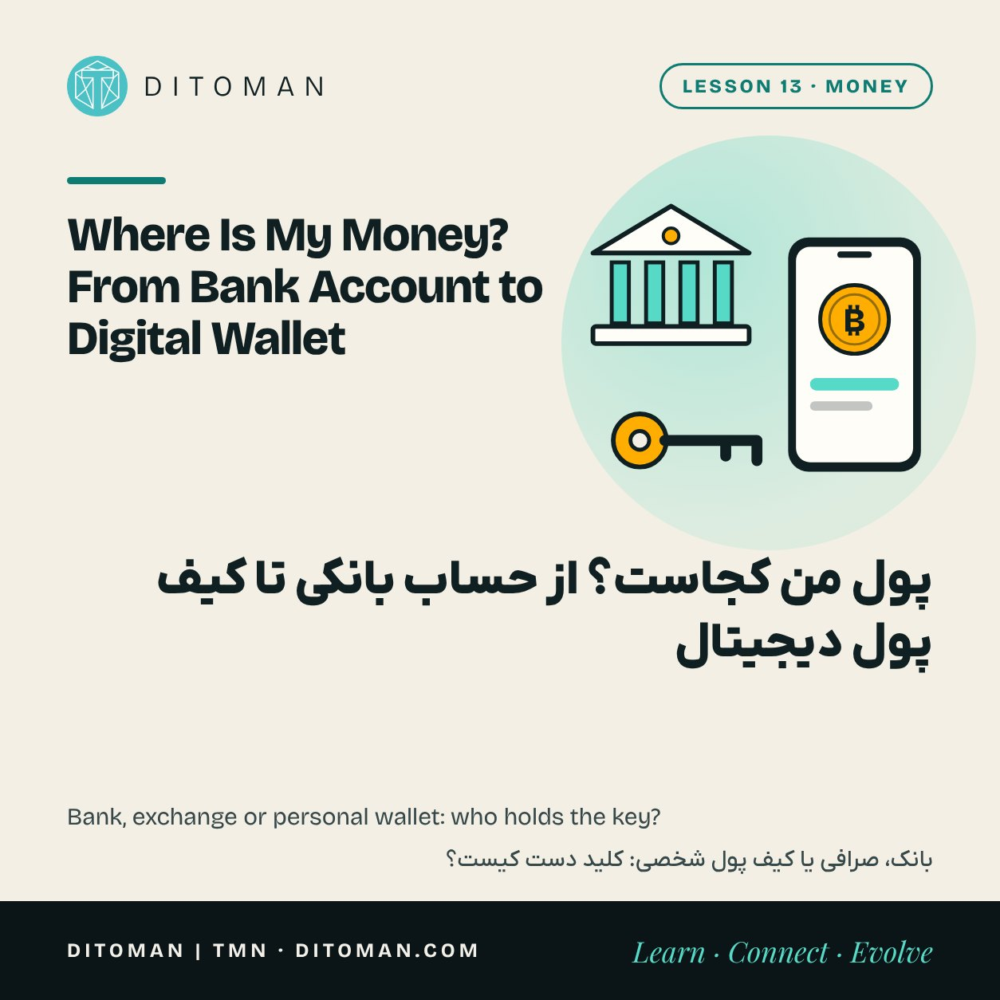
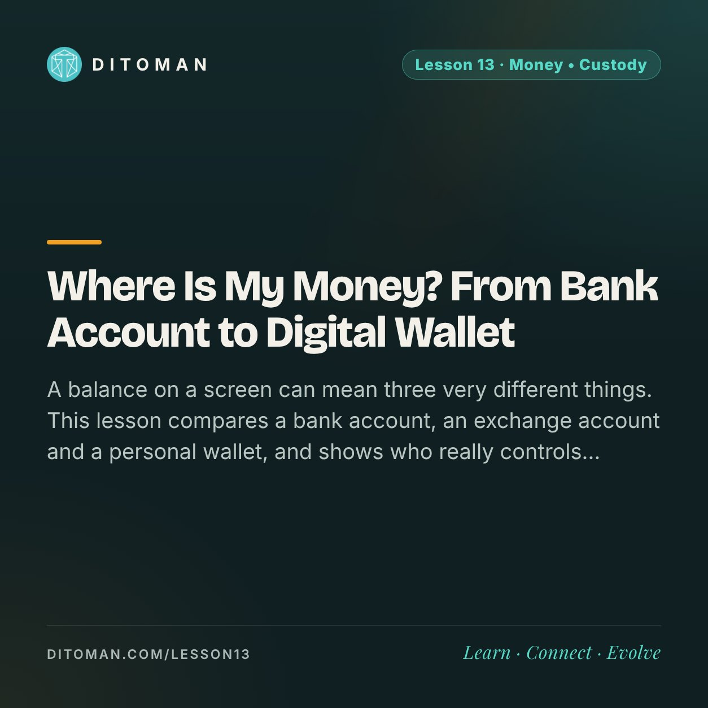

Where Is My Money? From Bank Account to Digital Wallet
پول من کجاست؟ از حساب بانکی تا کیف پول دیجیتال
A balance on a screen can mean three very different things. This lesson compares a bank account, an exchange account and a personal wallet, and shows who really controls the money in each one.
عددی که روی صفحه میبینیم میتواند سه معنی کاملاً متفاوت داشته باشد. این درس حساب بانکی، حساب صرافی و کیف پول شخصی را کنار هم میگذارد و نشان میدهد در هر کدام، کنترل واقعی پول دست چه کسی است.
Lesson Content
محتوای درس
Read the lesson in English or Persian.
درس را به فارسی یا انگلیسی بخوانید.
Open a banking app and you see a number. Open an exchange app and you see another number. Open a crypto wallet and there is a third. They all look like "my money". They are not the same kind of thing.
The difference comes down to one question we can ask of any balance: if I want this money right now, who has to say yes?
01. A bank balance is a promise
When you deposit money, it does not sit in a box with your name on it. The bank lends most of it out. What you own is a claim: the bank owes you that amount and promises to pay when you ask.
That promise is protected in several ways. Banks are licensed and supervised, and many countries run a deposit guarantee that repays savers up to a ceiling if a bank fails. In the United States the ceiling is 250,000 dollars per depositor per bank, and in the European Union it is 100,000 euros. Iran has its own Deposit Guarantee Fund with its own ceiling. Above the ceiling, a saver waits in line with other creditors.
02. An exchange balance is also a promise
A crypto exchange works the same way in one important respect: the coins are in the exchange's wallets, and your account shows what the exchange owes you. You hold a claim on a company.
The difference is the protection behind it. Most exchange accounts have no deposit guarantee. When the exchange FTX collapsed in November 2022, customers found that billions of dollars of their assets were missing, and they had to wait for a bankruptcy court.
This does not mean every exchange is dishonest. It means the balance is only as good as the company behind it.
03. A personal wallet is a key
A personal wallet, also called a self-custody wallet, is different. The coins are recorded on the blockchain, and the wallet holds the private key that can move them. Nobody else has to approve a transfer.
The key is usually shown once as a recovery phrase: 12 or 24 ordinary words. Whoever has those words controls the money. There is no "forgot my password" button and no office to call.
| Bank account | Exchange account | Personal wallet | |
|---|---|---|---|
| What you hold | A claim on the bank | A claim on the company | The key itself |
| Who approves a transfer | The bank | The exchange | Only you |
| If you forget the password | The bank resets it | The exchange resets it | No reset; only the recovery phrase |
| If the institution fails | Guarantee up to a ceiling | Usually no guarantee | Does not depend on one |
04. More control, more responsibility
With a bank, you trust an institution and get help when something goes wrong. With a personal wallet, you trust yourself and carry the whole responsibility.
If you lose the recovery phrase, the money is gone, even though it is still visible on the blockchain.
If someone else sees the phrase, they can empty the wallet from anywhere in the world, and the transfer cannot be reversed.
If you send to the wrong address or network, there is usually no way back. Lesson 16 covers this step by step.
05. Simple habits that prevent most losses
Write the recovery phrase on paper and keep it somewhere safe and dry. Do not photograph it, and do not store it in a chat, an email or a notes app.
Nobody legitimate will ever ask for the phrase. Not support staff, not a wallet company, not Ditoman.
Start with a small amount and practise receiving and sending before you move anything that matters.
Use a personal wallet for tokens an exchange does not support. TMN is one example: it must be received in a personal BNB Smart Chain wallet, as the TMN guide shows.
What to take from this
A balance is not always money in your hand. Ask who has to say yes before it moves.
A bank deposit is a claim on a bank, with supervision and a guarantee up to a ceiling.
An exchange balance is a claim on a company, usually without a guarantee.
A personal wallet gives you the key and the full responsibility that comes with it.
No arrangement is best for everyone. Many people use more than one, each for a different purpose.
اپ بانک را باز میکنیم و یک عدد میبینیم. اپ صرافی را باز میکنیم و عدد دیگری میبینیم. کیف پول کریپتو را باز میکنیم و عدد سومی آنجاست. هر سه شبیه «پول من» هستند، ولی از یک جنس نیستند.
تفاوتشان با یک پرسش روشن میشود که دربارهی هر موجودی میشود پرسید: اگر همین حالا این پول را بخواهم، چه کسی باید اجازه بدهد؟
۰۱. موجودی بانک یک قول است
وقتی پول را به بانک میسپاریم، در جعبهای با اسم ما نمیماند. بانک بیشترِ آن را وام میدهد. چیزی که ما داریم یک «طلب» است: بانک آن مبلغ را به ما بدهکار است و قول داده هر وقت خواستیم بپردازد.
از این قول چند جور محافظت میشود. بانکها مجوز دارند و زیر نظارتاند و بسیاری از کشورها صندوق ضمانت سپرده دارند که اگر بانکی ورشکست شد، تا یک سقف مشخص پول سپردهگذار را برمیگرداند. در آمریکا این سقف برای هر سپردهگذار در هر بانک ۲۵۰ هزار دلار و در اتحادیهی اروپا ۱۰۰ هزار یورو است. ایران هم صندوق ضمانت سپردهها را با سقف خودش دارد. برای مبلغ بالاتر از سقف، سپردهگذار باید کنار بقیهی طلبکارها در صف بماند.
۰۲. موجودی صرافی هم یک قول است
صرافی کریپتو از یک نظر مهم همینطور کار میکند: کوینها در کیف پولهای صرافیاند و حساب ما نشان میدهد صرافی چقدر به ما بدهکار است. ما از یک شرکت طلب داریم.
تفاوت در محافظتی است که پشت این طلب قرار دارد. بیشتر حسابهای صرافی ضمانت سپرده ندارند. وقتی صرافی FTX در نوامبر ۲۰۲۲ فروپاشید، مشتریها فهمیدند میلیاردها دلار از داراییشان سر جایش نیست و باید منتظر دادگاه ورشکستگی بمانند.
این به آن معنی نیست که هر صرافی نادرست است. یعنی موجودی فقط به اندازهی شرکتی که پشتش است اعتبار دارد.
۰۳. کیف پول شخصی یک کلید است
کیف پول شخصی فرق دارد. کوینها روی بلاکچین ثبت شدهاند و کیف پول کلید خصوصی را نگه میدارد؛ کلیدی که میتواند آنها را جابهجا کند. برای انتقال، اجازهی هیچکس دیگری لازم نیست.
این کلید معمولاً یک بار به شکل عبارت بازیابی نشان داده میشود: ۱۲ یا ۲۴ کلمهی معمولی. هر کس این کلمهها را داشته باشد، پول را کنترل میکند. دکمهی «رمز را فراموش کردهام» وجود ندارد و دفتری هم نیست که بشود به آن زنگ زد.
| حساب بانکی | حساب صرافی | کیف پول شخصی | |
|---|---|---|---|
| چه چیزی دارید | طلب از بانک | طلب از شرکت | خودِ کلید |
| چه کسی انتقال را تأیید میکند | بانک | صرافی | فقط خودتان |
| اگر رمز را فراموش کنید | بانک بازنشانی میکند | صرافی بازنشانی میکند | بازنشانی ندارد؛ فقط عبارت بازیابی |
| اگر نهاد ورشکست شود | ضمانت تا یک سقف | معمولاً بدون ضمانت | به نهادی وابسته نیست |
۰۴. کنترل بیشتر، مسئولیت بیشتر
در بانک به یک نهاد اعتماد میکنیم و وقتی مشکلی پیش بیاید کمک میگیریم. در کیف پول شخصی به خودمان اعتماد میکنیم و همهی مسئولیت با خود ماست.
اگر عبارت بازیابی گم شود، پول از دست رفته است، هرچند هنوز روی بلاکچین دیده میشود.
اگر کس دیگری عبارت را ببیند، میتواند از هر جای دنیا کیف پول را خالی کند و آن انتقال برگشت ندارد.
اگر به آدرس یا شبکهی اشتباه بفرستیم، معمولاً راه برگشتی نیست. درس ۱۶ این را قدمبهقدم توضیح میدهد.
۰۵. چند عادت ساده که جلوی بیشتر ضررها را میگیرد
عبارت بازیابی را روی کاغذ بنویسید و جایی امن و خشک نگه دارید. از آن عکس نگیرید و در چت، ایمیل یا اپ یادداشت ذخیرهاش نکنید.
هیچ فرد یا شرکت درستی این عبارت را از شما نمیخواهد. نه پشتیبانی، نه شرکت سازندهی کیف پول، نه دیتومان.
با مبلغ کم شروع کنید و پیش از جابهجا کردن مبلغ مهم، دریافت و ارسال را تمرین کنید.
برای توکنهایی که صرافی پشتیبانی نمیکند، کیف پول شخصی لازم است. TMN یک نمونه است: باید در کیف پول شخصی روی شبکهی BNB Smart Chain دریافت شود؛ راهنمای TMN همین را نشان میدهد.
چه برداشتی کنیم
موجودی همیشه به معنی پول در دست نیست. بپرسید برای جابهجا شدنش چه کسی باید اجازه بدهد.
سپردهی بانکی طلب از بانک است، با نظارت و ضمانت تا یک سقف.
موجودی صرافی طلب از یک شرکت است و معمولاً ضمانتی ندارد.
کیف پول شخصی کلید را به شما میدهد، همراه با همهی مسئولیتش.
هیچ روشی برای همه بهترین نیست. خیلیها از بیش از یک روش استفاده میکنند، هر کدام برای کاری.
Ready to try a personal wallet?
میخواهید کیف پول شخصی را امتحان کنید؟
The TMN guide shows, with pictures, how to add a token to a personal wallet and copy your address. Lesson 17 then covers the mistakes and scams to watch for.
راهنمای TMN با تصویر نشان میدهد چطور یک توکن را به کیف پول شخصی اضافه کنید و آدرس خودتان را کپی کنید. درس ۱۷ هم اشتباهها و کلاهبرداریهایی را که باید مراقبشان بود مرور میکند.
Key Concepts
مفاهیم کلیدی
- Deposit as a claim
- Deposit guarantee
- Custody
- Exchange (custodial) account
- Personal (self-custody) wallet
- Private key
- Recovery phrase
- Irreversible transfer
- سپرده بهعنوان طلب
- ضمانت سپرده
- نگهداری دارایی
- حساب صرافی (امانی)
- کیف پول شخصی
- کلید خصوصی
- عبارت بازیابی
- انتقال برگشتناپذیر
Learning Objectives
اهداف یادگیری
- Explain why a bank balance is a claim and not stored cash.
- Compare the protection behind a bank account and an exchange account.
- Describe what a private key and a recovery phrase do.
- List three ways money can be lost in a personal wallet.
- Name the habits that keep a recovery phrase safe.
- توضیح دهید چرا موجودی بانک یک طلب است، نه پول کنارگذاشته.
- محافظت پشت حساب بانکی و حساب صرافی را مقایسه کنید.
- بگویید کلید خصوصی و عبارت بازیابی چه کاری میکنند.
- سه راه از دست رفتن پول در کیف پول شخصی را نام ببرید.
- عادتهایی را که عبارت بازیابی را امن نگه میدارد بشمارید.
Quiz
آزمونک
Check what stayed with you. The answer is under each question.
ببین چه چیزی در ذهنت مانده. پاسخ زیر هر پرسش آمده است.
Question 1
پرسش ۱
What do you own when you deposit money in a bank?
وقتی پول را در بانک میگذارید، چه چیزی دارید؟
A. Cash stored in your name
الف. پول نقدی که به اسم شما کنار گذاشته شده
B. A claim on the bank
ب. طلب از بانک
C. A share of the bank
ج. سهمی از بانک
Correct answer: B
پاسخ درست: ب
Question 2
پرسش ۲
Who can move the coins in a personal wallet?
چه کسی میتواند کوینهای یک کیف پول شخصی را جابهجا کند؟
A. Whoever holds the private key or recovery phrase
الف. هر کس کلید خصوصی یا عبارت بازیابی را داشته باشد
B. The wallet company's support team
ب. تیم پشتیبانی شرکت سازندهی کیف پول
C. The exchange where they were bought
ج. صرافیای که از آن خریده شدهاند
Correct answer: A
پاسخ درست: الف
Question 3
پرسش ۳
Someone from 'support' asks for your recovery phrase to fix a problem. What is this?
کسی به اسم «پشتیبانی» برای حل یک مشکل، عبارت بازیابی شما را میخواهد. این چیست؟
A. A normal security step
الف. یک مرحلهی امنیتی معمولی
B. A scam
ب. کلاهبرداری
C. A legal requirement
ج. یک الزام قانونی
Correct answer: B. Nobody legitimate ever asks for it.
پاسخ درست: ب. هیچ فرد یا شرکت درستی این عبارت را نمیخواهد.
Question 4
پرسش ۴
What usually protects an exchange balance if the exchange fails?
اگر صرافی ورشکست شود، معمولاً چه چیزی از موجودی شما محافظت میکند؟
A. A deposit guarantee, like a bank
الف. ضمانت سپرده، مثل بانک
B. The blockchain
ب. بلاکچین
C. Usually nothing; you wait with other creditors
ج. معمولاً هیچ؛ کنار بقیهی طلبکارها منتظر میمانید
Correct answer: C
پاسخ درست: ج
Question 5
پرسش ۵
Where is the safest place for a recovery phrase?
امنترین جا برای عبارت بازیابی کجاست؟
A. A photo in your phone gallery
الف. عکسی در گالری گوشی
B. A message to yourself in a chat app
ب. پیامی به خودتان در یک پیامرسان
C. On paper, in a safe place
ج. روی کاغذ، در جایی امن
Correct answer: C
پاسخ درست: ج
Sources
منابع
- FDIC: Deposit insurance (United States)
- European Commission: Deposit guarantee schemes
- RTE News: FTX founder sentenced over the loss of customer funds (28 March 2024)
- ethereum.org: Wallets, keys and recovery phrases
Guarantee ceilings change. Check the current ceiling with the deposit guarantee body in your own country.
سقف ضمانت سپرده تغییر میکند. سقف فعلی را از نهاد ضمانت سپرده در کشور خودتان بپرسید.
با هم دنبال میکنیمFollow along
New lessons are announced first on Ditoman's channels.
درسهای تازه اول در کانالهای دیتومان معرفی میشوند.